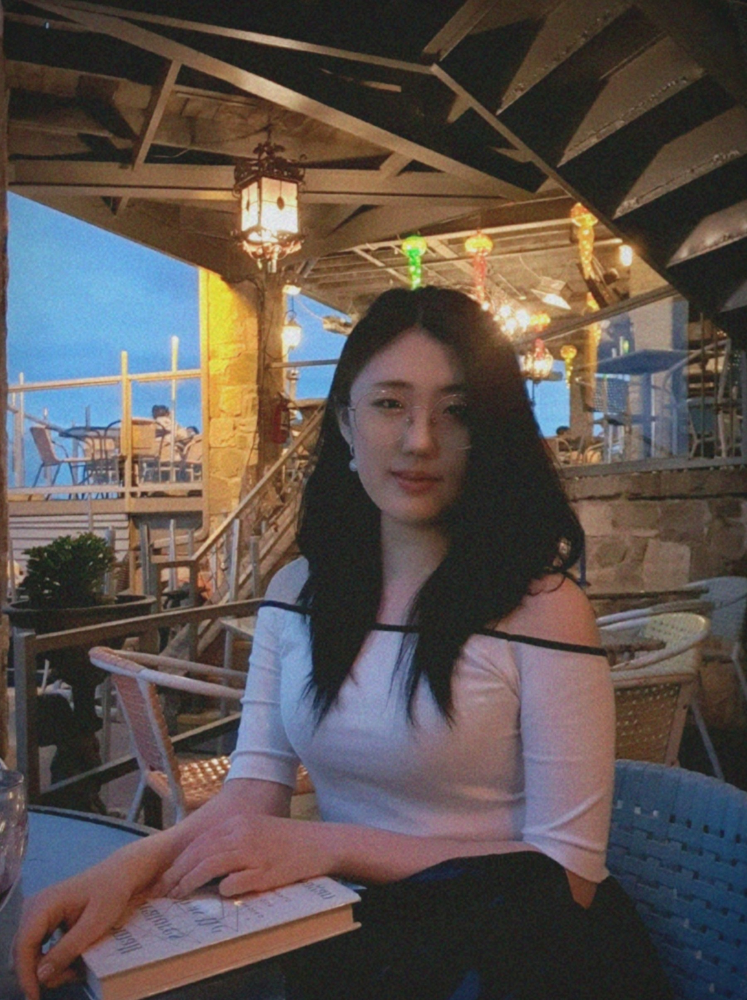
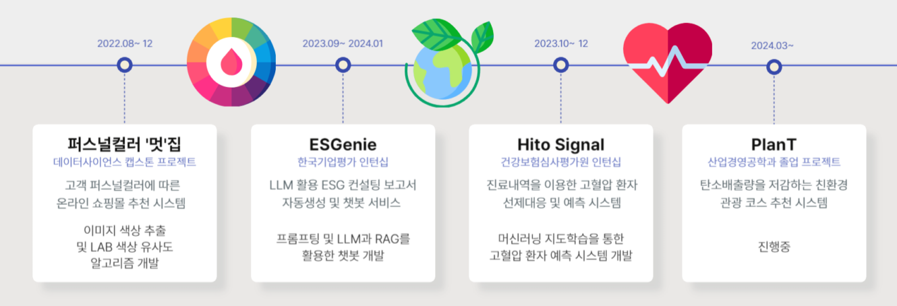
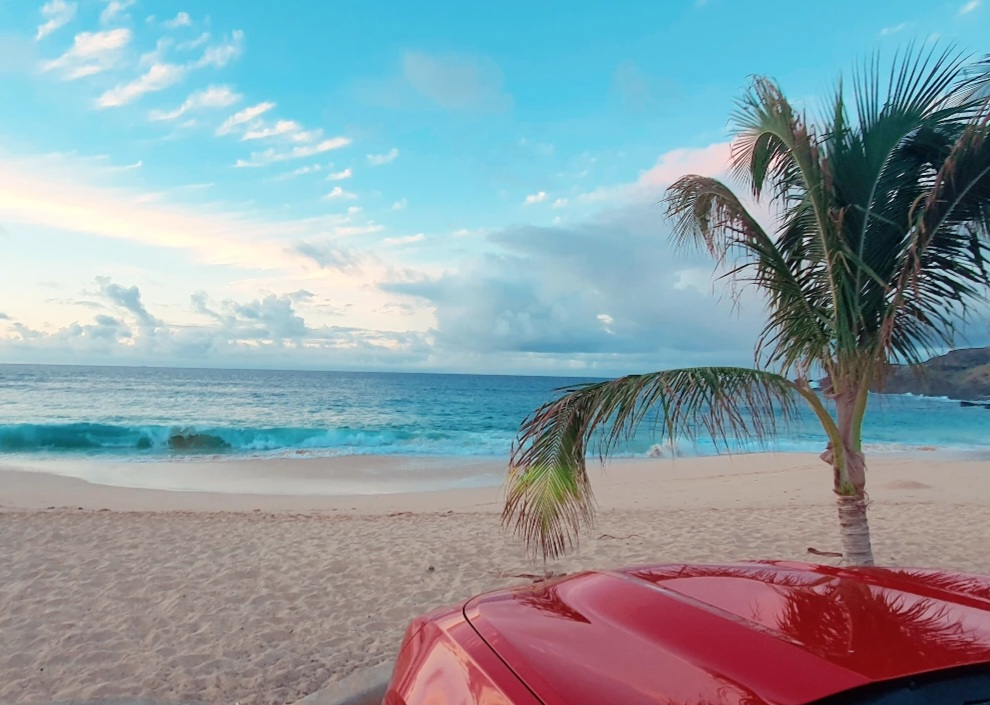
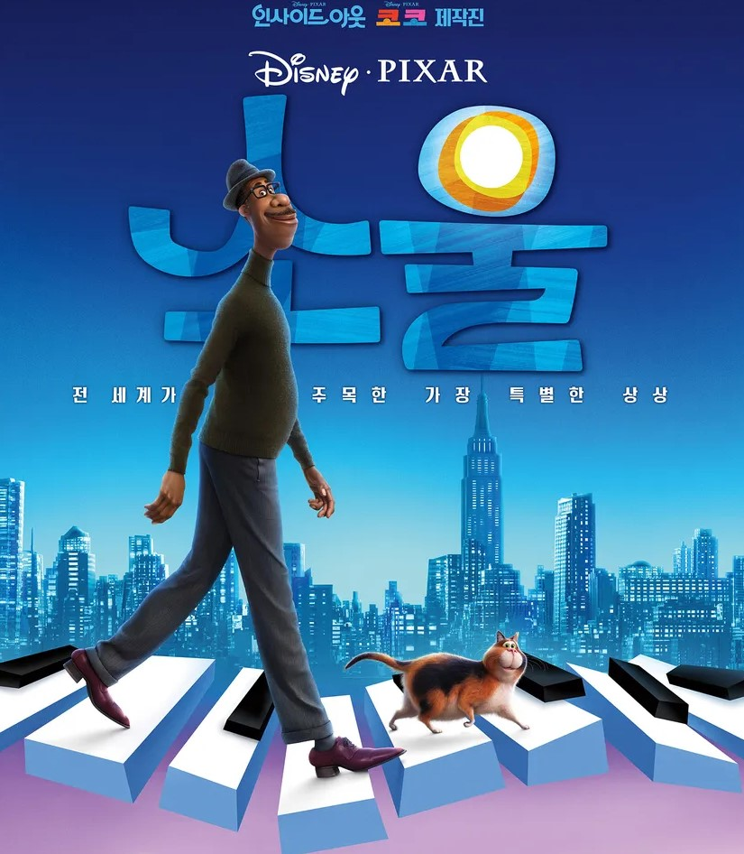
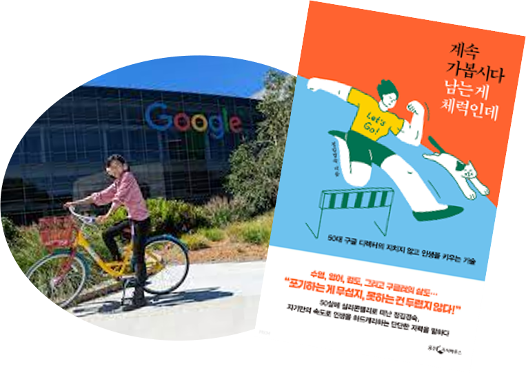
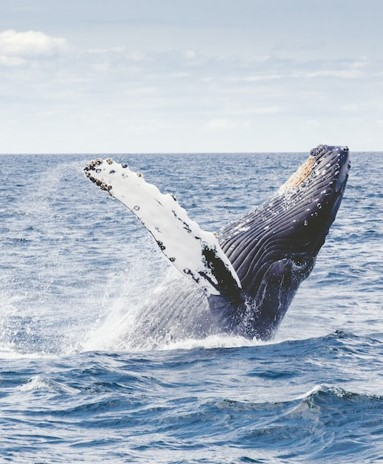
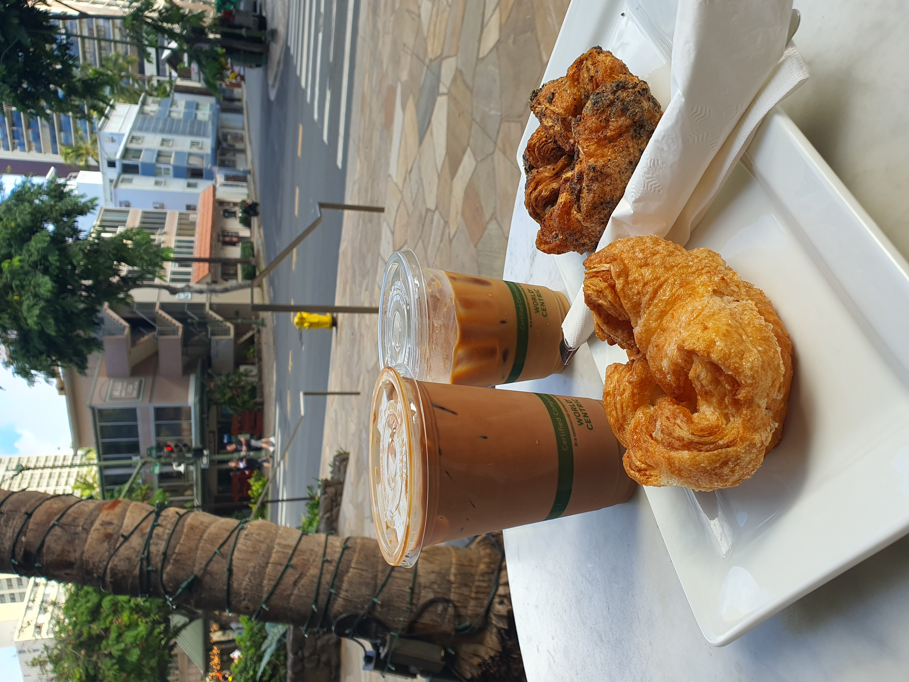
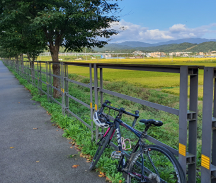

| Portfolio | Interests | Core competencies | What I Like | Plan |
😊 2000.01.04
🎓 한국외국어대학교 | 산업경영공학과 & 데이터사이언스학과
📞 010-9868-6449
📫 yebinuni@gmail.com
💻 GitHub
💼 LinkedIn

세상의 변화에 관심이 많고,
말과 글을 통해 스펙트럼을 넓혀가고 있습니다.
좋아하는 것들을 더욱 좋아할 수 있는 삶을 목표로 합니다.
데이터를 활용하여 문제를 해결하고,
프로세스를 개선하여 더 나은 변화를 만드는데 열정적입니다.

#긍정 에너지 #비판적 사고 #다양한 도전
#우연을 기회로 #열정과 책임 #세심함
#문제 해결력 #설득력 #감각적
정이 많고 사람을 통해 배우는 것을 좋아하는 ENFJ 입니다.
사람들에게 어떻게 하면 도움을 줄지, 더 나은 변화를 만들지 세심하게 관찰합니다.
다양한 도전을 통해 우연을 기회로 만들고, 감각적인 것들을 설득력 있게 풀어가는 기획자이고 싶습니다.
| 여행 | 영화 | 책과 글쓰기 |
|---|---|---|
|  |  |  |
| 새롭고 다양한 삶의 방식을 보고 경험할 수 있는 여행을 좋아합니다. | 깊은 의미를 감각적으로 표현하는 영화를 좋아합니다. | 특히 닮고 싶은 사람들의 에세이를 좋아합니다. |
| 동물과 환경 | 커피 | 운동 |
|  |  |  |
| 어려서부터 동물들과 함께 자라온 만큼 생명과 환경을 소중히 생각합니다. | 고소하고 풍미있는 커피를 좋아합니다. (맛있는 디저트와 함께) |
자전거, 달리기, 스키는 제 삶의 필수 요소입니다. |
🎬 영화 소울 예고편
| 월 | 화 | 수 | 목 | 금 | |
|---|---|---|---|---|---|
| 1 | 웹프로그래밍 | 데이터사이언스응용 | |||
| 2 | |||||
| 3 | |||||
| 4 | 산업시스템공학특론 | 서비스공학 | 인공지능 | ||
| 5 | |||||
| 6 | 캡스톤디자인프로젝트 | ||||
| 7 | 서비스공학 | 캡스톤디자인실습 | |||
| 8 | 데이터사이언스응용 | ||||
| 9 |